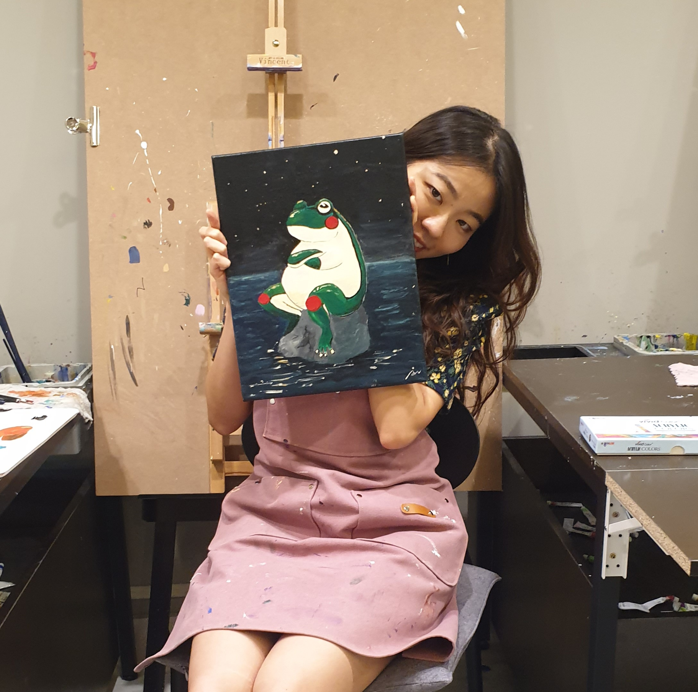

|  | Jooyeon Geem (김주연) Ph. D. student Astronomy program Seoul National University
|
Hello, I am Jooyeon Geem, a Ph. D. student from Seoul National University (SNU) and my advisor is Prof. Masateru Ishiguro.
My curiosity lies in water in our solar system; where it is, what it looks like, and how much is there. Understanding water in our solar system is important for knowing how life works on Earth. It can also be a reference to understanding the water in the exoplanet system. Ultimately, this research has the potential to identify the source of water and other volatile materials for space exploration. I am pursuing answers to these questions through astronomical observation. My doctoral research especially focuses on asteroids via polarimetry.
| Ph.D. Candidate | Mar. 2018 ~ Present | Astronomy Program, Department of Physics and Astronomy | Seoul National University |
|---|---|---|---|
| Exchange std. | Feb. 2016 ~ Jul. 2016 | Department of Physics | University of Oslo |
| B.S. | Mar. 2012 ~ Mar. 2017 | Department of Astronomy & Space science | KyungHee University |
| Date | Details |
|---|---|
| Feb. 2023 | NASA/IRTF 3-m telescope, awarded 16 hours, “Confirmation of the homogeneity of surface composition of (98943) 2001 CC21”, PI: Geem |
| Feb. 2023 | NHAO 2-m telescope, awarded three nights, “The optical polarimetric observation to study the surface texture of hydrated asteroids using WFGS2”, PI: Geem |
| Sep. 2022 | BK21 Graduate School Outstanding Research Talent Fellowship |
| May. 2019 | Outstanding Student Presentation Award (OSPA) at Japan Geoscience Union (JpGU) international conference, May 26-30, 2019 at Makuhari Messe, Chiba, Japan |
| Feb. 2019 | Kim In-ha Scholarship Fund (Seoul National University Development Fund Scholarship) |
2023 Journal Review, MNRAS
| Date | Details |
|---|---|
| Oct. 2023 | (oral presentation) The Korean astronomical society (KAS) meeting 2021, at Jeju, Korea, 2023 Oct 18-20 -Title: Spectral type and geometric albedo of (98943) 2001 CC21, the Hayabusa2# mission target |
| Feb. 2023 | (oral presentation) The 3rd DESTINY Science Working Team (SWT) meeting, in online, 2023 Feb 02-03 -Title: Polarimetric observation of (3200) Phaethon in 2021 |
| Aug. 2022 | (oral presentation) General Assembly International Astronomical Union (IAUGA) 2022, at Busan, Korea, 2022 Aug 2-11 -Title: Polarimetric Study on the Hydrated asteroids |
| Feb. 2022 | (oral presentation) PERC Int’l Symposium on Dust & Parent Bodies (IDP) 2022, in online, Japan, 2022 Feb 21-22 -Title: Negative Polarization branch of (3200) Phaethon |
| Oct. 2021 | (oral presentation) Korean Space Science Society (KSSS) meeting 2021, at Gyeongju, Korea, 2021 Oct 27~29 -Title: Rendezvous Mission to Apophis: IV. Polarimetry |
| Oct. 2021 | (oral presentation) The Korean astronomical society (KAS) meeting 2021, at Jeju, Korea, 2022 Oct 13-15 -Title: (Rendezvous Mission to Apophis III.) Polarimetry of S-type asteroids: For a Better Understanding of surgical evolution |
| Jun. 2021 | (oral presentation) Japan Geoscience Union (JpGU) international conference, in online, Japan, 2021 May 30 - June 06 -Title: Study of Hydrated asteroids via Polarimetry: Correlation between Polarimetric Properties and spectral features of hydrated asteroids |
| Apr. 2021 | (oral presentation) The Korean astronomical society (KAS) meeting 2021, in online, Korea 2021 Apr 13-15 -Title: Study of Hydrated Asteroids via Polarimetry: Correlation between Polarimetric Properties and spectral features of hydrated asteroids |
| Mar. 2021 | (Poster presentation) IAU 360: ASTROPOL 2020, in online, Japan 2020 Mar 23-27 -Title: Polarimetric study of possible dormant comets among asteroids in comet-like orbits |
| Mar. 2019 | (oral presentation) Japan Geoscience Union (JpGU) international conference, at Makuhari Messe, Japan, 2019 May 26 - 30 -Title: Polarimetric study of possible dormant comets among asteroids in comet-like orbits |
| May. 2018 | (Poster presentation) Japan Geoscience Union (JpGU) international conference, at Makuhari Messe, Japan, 2018 May 20-24 -Title: The polarimetric study of 1984 QY1, the possible dormant |
| Oct. 2017 | (oral presentation) The Korean astronomical society (KAS) meeting 2017, at Yeosu, Korea 2017 Oct 12-13 -Title: The polarimetric study of (331471) 1984QY1: an asteroid in comet-like orbit |
Programming: Mainly use Python (visit my Github), Experience with C++
Driving: Achieve a driving license on 2012
* P, O, and D mean participation in Proposal, Observation, and Data analysis, respectively.